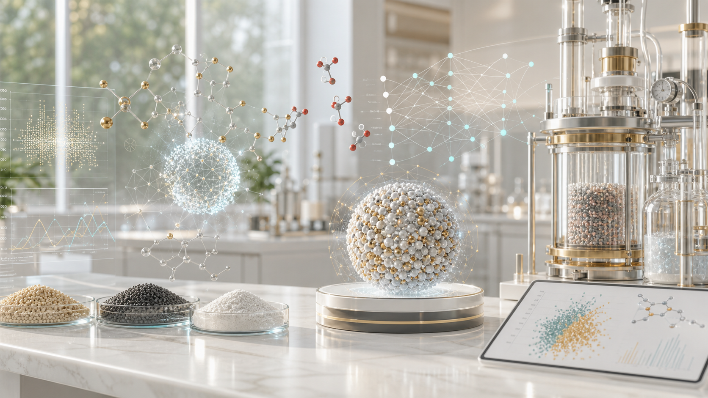

Research across AI, catalysis, and materials.
I focus on catalytic conversion of CO2 to gasoline and jet fuels, Bayesian optimization workflows for Fischer-Tropsch catalyst discovery, and data-driven modeling of high-entropy alloy properties.
AI-guided catalysis | CO2 to liquid fuels
Convert CO2
Optimize faster
I focus on catalytic conversion of CO2 to gasoline and jet fuels, Bayesian optimization workflows for Fischer-Tropsch catalyst discovery, and data-driven modeling of high-entropy alloy properties.
UC Berkeley, BEARS
ISCE2, A*STAR
Nanyang Technological University
Selected Projects
CO2 Hydrogenation | Direct Joule Synthesis
Bayesian Optimization | Multi-Task Gaussian Processes
Materials Informatics | High-Entropy Alloys
Project details
The portfolio connects fast experimental routes, probabilistic experiment selection, and interpretable materials modeling into one research story.
Direct Joule synthesis with high-energy ball milling prepares Fe-based catalysts that reconstruct into oxide-carbide interfaces for CO2 activation and C-C coupling.

Weighted multi-task Gaussian Processes balance yield, uncertainty, and practical reactor constraints across Fe-Co-Na-Zn catalyst compositions.
Density-of-states features and PCA reveal energy-dependent links to yield strength and plasticity, improving prediction beyond composition-only descriptors.
By the numbers
Positions
Indian Institute of Technology Madras
University at Buffalo, SUNY
Nanyang Technological University
Publication
Md Tohidul Islam, Somya Verma, Stephen A. Giles, Debasis Sengupta, and Scott R. Broderick. Materials Today Communications, 47, 113112.
Read PublicationPast Teams
Kriyaneuro Technologies Pvt Ltd
Madras Warhawks, IIT Madras
Indian Oil Corporation Limited, Mumbai
Team Anveshak, IIT Madras
AIChE IIT Madras Chapter